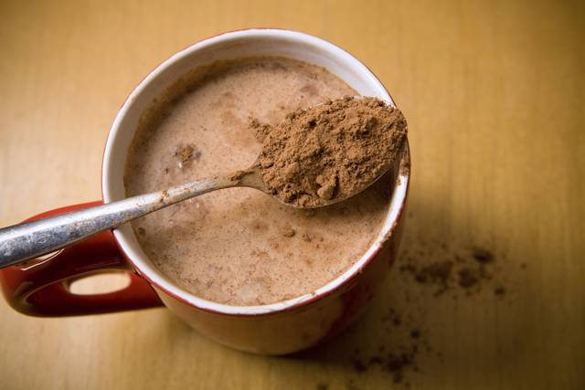

Receta #1 Freír un huevo.
- Tiempo aproximado: 7 minutos
- Comensales: 1 cada dos huevos.
| Ingredientes |
Cantidad |
Huevos. |
Dos por comensal. |
Aceite. |
Un chorrito. |
Sal. |
Un pellizco. |
Repetir estos pasos para cada huevo.
Primer paso: Poner el aceite a calentar en una sartén.
Segundo paso: Cuando esté caliente echar el huevo.
Tercer paso: Echar el chorrito de sal encima del huevo.
Cuarto paso: Echar aceite encima del huevo para que se cocine por todas partes.
Quinto paso: Cuando esté hecho el huevo, sacarlo con cuidado y ponerlo en un plato.
Sexto y no menos importante paso: Comerse el huevo.

Fuente Placer al plato.
Receta #2 Hacer un colacao.
- Tiempo aproximado: 2 minutos
- Comensales: 1.
| Ingredientes |
Cantidad |
Colacao. |
Dos cucharadas. |
Leche. |
Un vaso (200ml). |
Primer paso: Calentar el vaso de leche al microondas 2 minutos.
Segundo paso: Echar dos cucharadas de colacao.
Tercer paso: Remover con energía.
Cuarto y no menos importante paso: Beberse el colacao.

Fuente: Experiencia personal.
Receta #3 Manzana asada.
- Tiempo aproximado: 20 minutos
- Comensales: 2.
| Ingredientes |
Cantidad |
Manzanas. |
4. |
Canela en polvo. |
Un pellizco. |
Agua. |
3 cucharaditas. |
Miel. |
Un chorrito. |
Almendras fileteadas sin piel. |
50 grs. |
Primer paso: Lavar bien las manzanas. Quitar la parte de arriba, el corazón y las semillas con la ayuda de un cuchillo delgado o con un descorazonador.
Segundo paso:Utilizar una fuente de material apto para microondas. Verter las 3 cucharaditas de agua. Sobre ésta, esparcir un poco de la canela en polvo.
Tercer paso: Colocar las manzanas en la fuente. Agregar en el espacio descorazonado un chorrito de miel, la media cucharadita de brandy y canela en polvo.
Cuarto paso: Tapar el recipiente. De no tener tapa, hacerlo con papel film.
Quinto paso:Cocinar durante 12 minutos. Durante la cocción, detener el proceso para revisar el estado de las manzanas. Si es necesario, pincharlas con la punta de un cuchillo afilado.
Sexto paso:Retirar la fuente y taparla muy bien hasta esperar servir.
Séptimo paso: En una sartén antiadherente, tostar las almendras fileteadas a fuego mediano hasta que queden doradas. Durante la cocción, mover constantemente con una paleta de madera para garantizar se tuesten por todos sus lados.
Octavo paso:Al servir, rociar sobre las manzanas el líquido que queda en el fondo de la fuente. Después colocar sobre éstas las almendras fileteadas para adornar la manzana.
Fuente Recetas de OK diario.